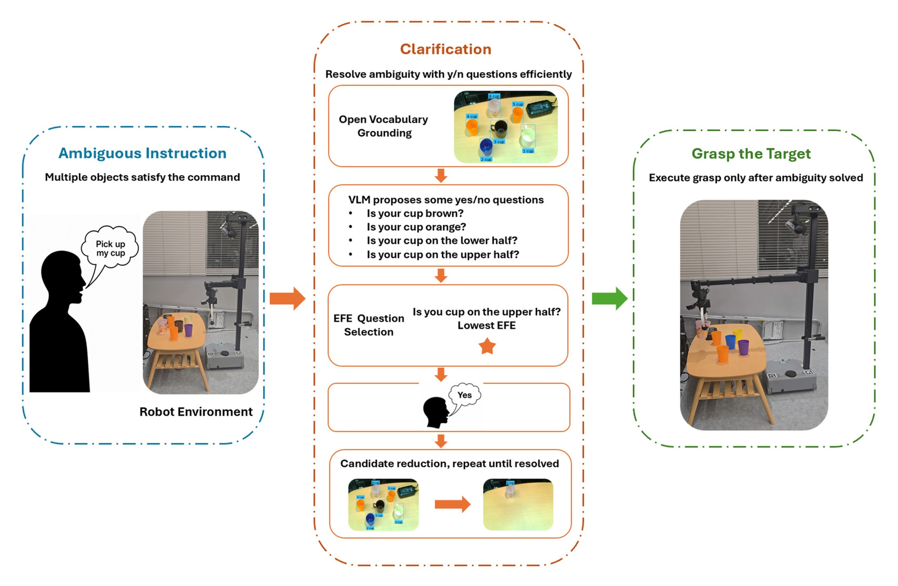

Construct open-vocabulary object candidates from RGB-D observations.
Real-world robotics demonstration
Clarify the target.
Then grasp with confidence.
ActivAsk resolves referential ambiguity before robotic grasping by asking candidate-grounded questions, updating the candidate state from the user's answer, and executing only after the target is resolved.

01 / Real-world demo
ActivAsk in the lab
This 67-second demonstration shows the system operating in a cluttered tabletop scene with multiple cups and a Hello Robot Stretch platform. Use the controls below to play the recording directly on this homepage.
02 / System loop
From ambiguity to action.
Ask a candidate-grounded yes/no question when the instruction is ambiguous.
Use the user's answer to eliminate inconsistent candidates.
Pass the resolved target to the robot for grasp execution.
Research release
Built for reproducible study.
Explore the public data, analysis scripts, prompt materials, minimal policy implementation, and supplementary videos.